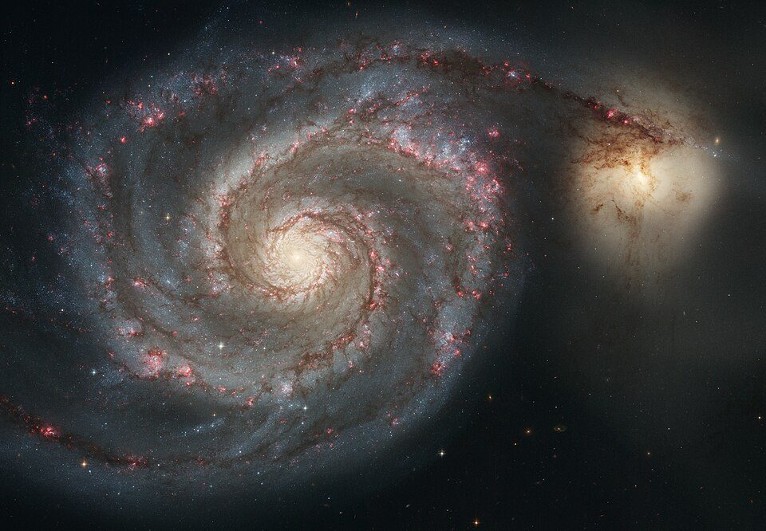
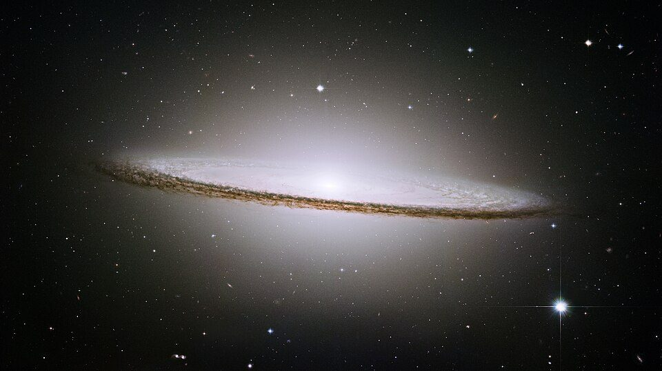

Tipos de galaxias
Espirales, elípticas, lenticulares e irregulares: la clasificación de Hubble y lo que nos cuenta la forma de una galaxia.


En 1926, Edwin Hubble ordenó las galaxias según su forma en un esquema que, por su aspecto, se conoce como el diapasón de Hubble. Con algunos retoques, se sigue usando hoy.
Galaxias espirales
Tienen un disco plano con brazos espirales donde nacen estrellas jóvenes y azules, un bulbo central de estrellas viejas y un halo. Los brazos no son estructuras fijas, sino ondas de densidad que recorren el disco, como un atasco de tráfico que se desplaza aunque los coches cambien. Unas dos terceras partes de las espirales tienen una barra central, como la Vía Láctea y la preciosa NGC 1300.


Galaxias elípticas
Tienen forma de esfera o de balón de rugby, sin brazos ni apenas gas. Sus estrellas son viejas y rojizas, y se mueven en todas direcciones. Las mayores galaxias del universo son elípticas gigantes, como M87, en el centro del cúmulo de Virgo, con billones de estrellas y el famoso agujero negro fotografiado en 2019. Muchas se formaron por el choque de varias espirales.
Lenticulares e irregulares
- Las lenticulares están a medio camino: tienen disco pero casi no tienen brazos ni gas para formar estrellas. La galaxia del Sombrero se parece mucho a una de ellas, con su enorme bulbo brillante y su franja de polvo.
- Las irregulares no tienen una forma definida, a menudo porque la gravedad de otra galaxia las ha deformado. Las Nubes de Magallanes son un ejemplo.
- Las enanas son las más numerosas: pequeñas, tenues y con pocos millones de estrellas.


Galaxias activas y cuásares
En algunas galaxias, el agujero negro central está engullendo gas a gran ritmo y su entorno brilla más que todas las estrellas de la galaxia juntas. Son las galaxias activas. Las más extremas son los cuásares, descubiertos en los años sesenta como «estrellas» de radio misteriosas. Hoy sabemos que son núcleos de galaxias muy lejanas que pueden brillar como billones de soles.
La forma cuenta su historia
Una galaxia espiral con mucho gas sigue formando estrellas; una elíptica roja y vieja ya casi no lo hace. Los astrónomos usan la forma y el color de las galaxias para reconstruir cómo han ido creciendo y chocando a lo largo de 13.000 millones de años. El telescopio James Webb ha descubierto que, en el universo joven, había discos ya ordenados mucho antes de lo esperado.
Vídeos para entenderlo mejor
- Descubre la galaxia Vía Láctea, Sistema solar y estrellasAstronomiaweb · 2,4 M visualizaciones
- ¿Por qué las Galaxias tienen Forma Espiral?QuantumFracture · 616 mil visualizaciones
Los vídeos son de YouTube y de sus autores. Se cargan solo al pulsar sobre ellos. Ver todos los vídeos →